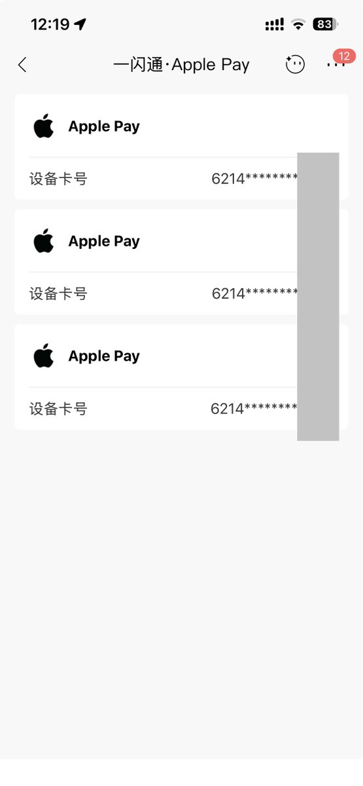
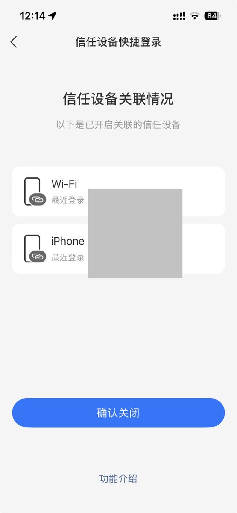
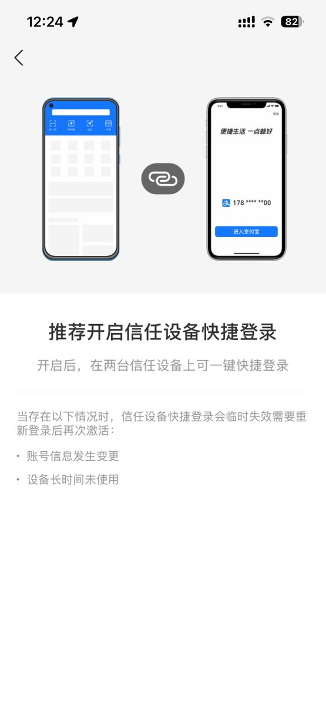

@zongtianshuo 致评论区那些拿涉及支付所以不能多设备登录的
暂且不提一张卡可以在多个设备的Apple Wallet中添加
即使支付宝不能多设备同时登录，但它也支持信任设备快捷免验证登录啊😅
这根本不是能不能做的问题，而是开发者愿不愿意做的问题

暂且不提一张卡可以在多个设备的Apple Wallet中添加
即使支付宝不能多设备同时登录，但它也支持信任设备快捷免验证登录啊😅
这根本不是能不能做的问题，而是开发者愿不愿意做的问题



我真的不理解中国一堆傻逼软件为什么都2026年了还要管制双设备登录，真的傻逼得不得了。Telegram、Twitter、
Telegram，Twitter，Instragram，Facebook，都不管双设备，偏偏微信和QQ，到现在还是只能靠第三方客户端。就我那点数据我用得着你用保护我的名字强行限制双设备登录？？？弱智来的设计
Telegram，Twitter，Instragram，Facebook，都不管双设备，偏偏微信和QQ，到现在还是只能靠第三方客户端。就我那点数据我用得着你用保护我的名字强行限制双设备登录？？？弱智来的设计